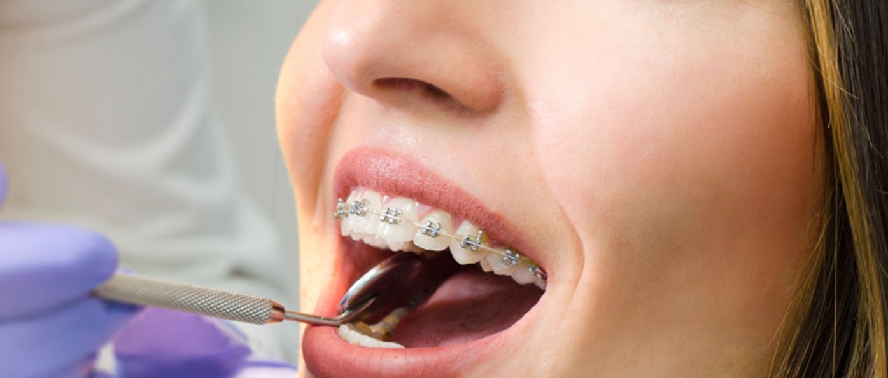
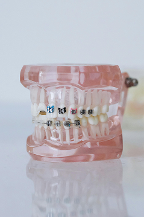

Ortodoncia
Cada vez más personas buscan mejorar la estética y funcionalidad de su sonrisa a través de tratamientos de ortodoncia.
La ortodoncia es una especialidad odontológica que se encarga de corregir las malposiciones dentarias y los problemas de mordida. No solo mejora la apariencia, sino también la salud bucal general.
Es fundamental contar con una evaluación profesional para definir el tipo de ortodoncia más adecuada según cada caso particular, ya sea con brackets tradicionales, estéticos o alineadores invisibles.

¿Qué tipos de ortodoncia existen?
Existen diferentes sistemas de ortodoncia como los brackets metálicos, estéticos, linguales y alineadores invisibles. La elección dependerá de las necesidades del paciente, su estilo de vida y la recomendación profesional.
¿Cuánto dura un tratamiento de ortodoncia?
La duración del tratamiento varía según la complejidad del caso, pero suele extenderse entre 12 y 36 meses. Durante este tiempo es necesario acudir a controles regulares para asegurar el éxito del tratamiento.
¿A qué edad se puede comenzar un tratamiento de ortodoncia?
Aunque la ortodoncia es común en adolescentes, también es totalmente viable en adultos. Lo importante es tener encías y huesos saludables. Cuanto antes se detecte un problema de alineación, mejor será el pronóstico.
¿Qué cuidados debo tener durante el tratamiento de ortodoncia?
1 – Mantener una higiene bucal rigurosa, cepillando después de cada comida.
2 – Utilizar cepillos interdentales o irrigadores para limpiar entre brackets.
3 – Evitar alimentos muy duros o pegajosos que puedan dañar el aparato.
4 – Asistir a los controles mensuales para realizar los ajustes necesarios.
5 – Seguir las recomendaciones del ortodoncista al pie de la letra.
6 – Usar retenedores una vez finalizado el tratamiento, según lo indicado.
